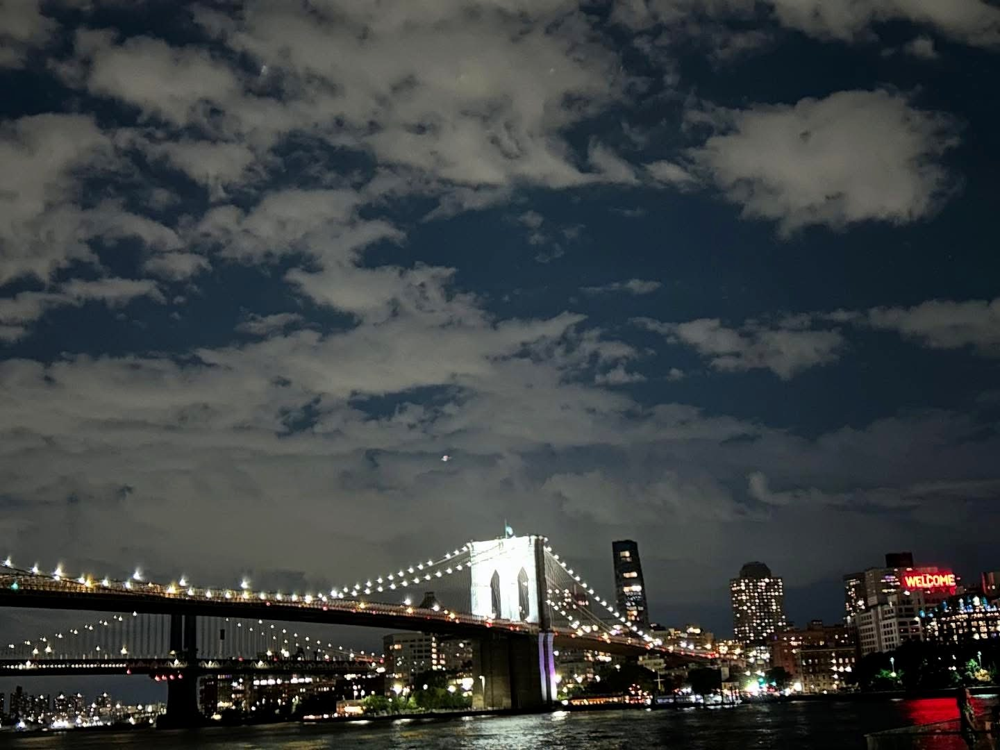
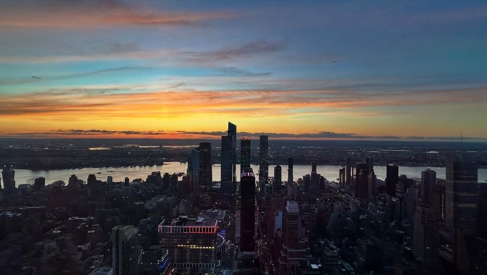

Ci sono città che si lasciano guardare e città che, invece, chiedono di essere percorse. New York appartiene alla seconda specie. Non si offre mai tutta insieme, non si consegna a uno sguardo solo, non si lascia riassumere in un panorama o in una fotografia ben riuscita. Bisogna entrarci dentro con il corpo, darle tempo, accettare di attraversarla a piedi finché i quartieri smettono di essere nomi sulla mappa e diventano variazioni di luce, di lingua, di umore.
In sei giorni ho avuto la sensazione di passare continuamente da una città all’altra restando sempre nella stessa. Lower Manhattan, Brooklyn, Midtown, Harlem: più che quartieri, mondi autonomi, ognuno con il proprio battito, la propria tensione, il proprio modo di stare al mondo. E forse il vero viaggio, qui, è proprio questo: imparare che New York non ha un centro, ma una moltitudine di anime che convivono senza mai fondersi del tutto.
Il sud dell’isola, dove tutto comincia
Il primo incontro è stato con il vento del Battery Park. Un vento che arrivava dalla baia con un odore d’acqua e di metallo, e che sembrava ricordare subito una cosa essenziale: New York, prima ancora di essere una foresta verticale, è stata un approdo. Davanti ai traghetti per Ellis Island e la Statua della Libertà ho pensato che questa città conserva ancora, sotto la superficie lucida della potenza, qualcosa dell’attesa e dell’approdo, della promessa e della paura. L’oceano, qui, non è uno sfondo: è un’origine.
Dal parco, il passaggio al Financial District è quasi brutale. Le strade si stringono, i palazzi si chiudono sopra la testa, la luce cambia. Wall Street appare all’improvviso come un canyon di pietra e vetro, più severo che spettacolare, e in mezzo a quella severità si muovono i rituali globali del turismo: il Toro preso d’assalto, la Fearless Girl che regge ancora il suo gesto simbolico, le bandiere sulla facciata del New York Stock Exchange. Tutto sembra noto, già visto, quasi consumato dall’immaginario. Eppure dal vivo conserva una sua forza, una durezza reale, qualcosa che non si lascia del tutto addomesticare dalle immagini.
Poi, quasi senza preavviso, arriva Trinity Church. Piccola, raccolta, ostinatamente fuori scala rispetto al mondo che la circonda. Entrarci significa cambiare immediatamente temperatura emotiva: il rumore resta fuori, il passo rallenta, gli occhi si abituano a un’altra idea di tempo. È una delle prime lezioni di New York: qui la dismisura convive sempre con l’interruzione, l’eccesso con l’intimità.
Al World Trade Center il corpo capisce da solo come comportarsi. Nessuno lo decide davvero, ma tutti abbassano la voce, rallentano, misurano i movimenti. Le vasche del 9/11 Memorial non hanno bisogno di spiegazioni: l’acqua che scompare verso il centro del vuoto lavora in silenzio, con una semplicità quasi insostenibile. I nomi incisi sul bronzo, toccati con la punta delle dita da visitatori arrivati da ogni parte del mondo, restituiscono alla memoria una forma concreta, tangibile. Poi lo sguardo si alza e incontra la Freedom Tower, come un gesto netto, verticale, quasi una risposta lanciata al cielo. Poco più in là, l’Oculus di Calatrava abbaglia: bianco, osseo, irreale, simile al corpo di un animale gigantesco emerso da sottoterra.
Ma New York non permette mai di restare troppo a lungo nella stessa tonalità. Basta riprendere a camminare, e Chinatown esplode come un cambio di frequenza. Le insegne si addensano, l’aria si fa più densa, i marciapiedi più vivi. A Chatham Square e poi lungo le strade strette del quartiere, tra Doyers Street e gli angoli più compressi della Lower East Side, la città smette di parlare inglese soltanto. In Columbus Park si stanno seduti, si gioca, si osserva il tempo passare. C’è una quotidianità fittissima che non chiede di essere spiegata.
Al Mahayana Temple siamo entrati quasi per caso e ci siamo ritrovati dentro una cerimonia buddista. È stato uno di quei momenti che nessuna guida segnala davvero nel modo giusto: non perché sia eccezionale in senso spettacolare, ma perché sospende l’idea stessa del viaggio come sequenza di tappe. Per qualche minuto non stavamo “visitando” nulla. Eravamo semplicemente lì, dentro un ritmo che non ci apparteneva, e proprio per questo prezioso.
Pranzare da Super Taste, su Eldridge Street, è stato il naturale proseguimento di quella verità non confezionata. Un posto rapido, essenziale, senza alcuna intenzione di piacere. Forse per questo perfetto. New York è piena di luoghi in cui paghi l’atmosfera; ogni tanto trovarne uno in cui si paga solo il cibo è quasi una forma di sollievo.
Little Italy, poco più in là, mi è sembrata invece una nostalgia organizzata. Mulberry Street conserva facciate, nomi, segni di appartenenza, ma li espone con una consapevolezza turistica che la rende meno viva, più rappresentazione che quartiere. Eppure Ferrara Cafe & Bakery, con la sua lunga memoria, merita ancora una sosta. Ci sono luoghi che sopravvivono proprio perché accettano di diventare simbolo, e Ferrara è uno di questi.
La sera, NoHo e il Village hanno cambiato ancora una volta il tono della giornata. Prince Street, i tavoli all’aperto, le librerie, il traffico umano senza frenesia: lì New York sembrava finalmente concedersi il lusso di essere anche seducente. Tornarci per cena è stato inevitabile. Una sosta da Café Gitane, una fetta da Prince Street Pizza, il rifugio tra gli scaffali di McNally Jackson: piccoli riti urbani che fanno sentire, per qualche ora, meno ospiti e più parte del flusso.
A chiudere il giorno, il Greenwich Village. Le strade più basse, le case di mattoni, le facciate che sembrano nate per essere ricordate. Washington Square Park, con il suo arco e la sua umanità scomposta, ha il fascino dei luoghi che sanno essere insieme scenografici e familiari. E sì, ci siamo concessi anche il lato più sentimentale e pop del quartiere: il palazzo di Friends, quello di Carrie Bradshaw. Luoghi forse persino ridicoli, nella loro fama planetaria, ma impossibili da liquidare con superiorità. A New York perfino il cliché, se vissuto nel momento giusto, può avere una sua grazia.
Midtown, la macchina perfetta, e poi il respiro di Central Park
Il secondo giorno è cominciato a Midtown, e Midtown al mattino ha l’energia di un meccanismo già perfettamente in funzione. Tutto si muove in anticipo rispetto a te: i flussi di persone, i cartelloni, i taxi, i palazzi che si riflettono gli uni negli altri. Tra Times Square e Broadway ci si sente subito dentro una sovraesposizione permanente, come se la città volesse ricordare a ogni passo la propria capacità di imporsi allo sguardo.
Il Rockefeller Center, invece, restituisce una compostezza diversa, quasi classica. Salire al Top of the Rock significa assistere a una specie di chiarimento: improvvisamente Manhattan si ordina, si dispone, si lascia leggere. Central Park si stende come una ferita verde e perfetta, il resto della città si solleva tutto intorno in una geometria di vetro e pietra. Dall’alto, New York perde un po’ della sua aggressività e mostra la propria intelligenza formale. Ciò che da strada sembra eccesso, da lassù diventa struttura.
Poco distante, St. Patrick’s Cathedral resiste come un controcanto. Entrare lì dentro, dopo la strada, significa ancora una volta passare da un registro all’altro: dal rumore alla risonanza, dalla fretta alla permanenza. Forse è proprio questo uno dei segreti della città: la sua capacità di alternare continuamente saturazione e tregua.
Il pranzo, nascosto dietro la tenda anonima del Burger Joint, ha avuto il gusto del piccolo mistero urbano. L’idea che un posto così disordinato e rumoroso si nasconda dentro un hotel elegante ha qualcosa di profondamente newyorchese: la città ama i contrasti non come eccezione, ma come forma naturale dell’esistenza.
Poi Central Park, finalmente. E lì il viaggio ha cambiato passo. Nel lato sud del parco tutto sembrava appartenere a una memoria collettiva già pronta — Sheep Meadow, Bow Bridge, Bethesda Fountain — e tuttavia nulla risultava deludente o esaurito dall’essere già stato visto altrove. Anzi. C’è qualcosa di commovente nel riconoscere un luogo prima ancora di entrarci, e nel vedere che la realtà riesce comunque ad aggiungere spessore all’immaginazione. Le barche sul lago, la luce trattenuta dagli alberi, le persone sdraiate nell’erba: per un tratto ho avuto la sensazione di camminare dentro un’immagine nota che, solo dal vivo, diventava finalmente vera.
Sul lato dell’Upper West Side, l’American Museum of Natural History ci ha accolti quasi al volo, in una visita più intuita che vissuta. Ma a volte basta davvero poco: lo scheletro del dinosauro nella hall, intravisto in fretta, è bastato a imprimere una memoria netta.
La sera, però, è stata dell’acqua. La crociera della Circle Line dal Pier 83, al tramonto, ha mostrato New York dalla sua distanza giusta: abbastanza lontana da farsi contemplare, abbastanza vicina da continuare a pesare. La città scorreva lungo le rive come un racconto già scritto e sempre nuovo, con il New Jersey, Long Island, la Statua della Libertà che si accendeva lentamente, il cielo che cambiava colore sopra le silhouette dei palazzi. È stata una di quelle esperienze di cui si potrebbe dire, senza vergogna, che valgono il prezzo proprio perché sanno trasformarsi in ricordo mentre stanno ancora accadendo.
Brooklyn, ovvero la distanza necessaria
Brooklyn è arrivata il terzo giorno come una correzione dello sguardo. Per capire Manhattan, forse, bisogna davvero allontanarsene un poco.
Tra Williamsburg, Smorgasburg e i murales del Bushwick Collective, la città sembrava spostarsi su un’altra frequenza: meno monumentale, più porosa, più immediatamente abitata. C’era una libertà diversa nel modo in cui gli spazi venivano vissuti, una leggerezza che non aveva nulla di superficiale.
Poi, da Clark Street in avanti, Brooklyn Heights ha imposto un’altra atmosfera ancora. Se Manhattan spesso si offre come dichiarazione, Brooklyn Heights preferisce il sussurro. I brownstone, gli alberi, i marciapiedi ampi, le case che sembrano custodire una lunga educazione del silenzio: camminare tra Orange Street, Willow Street, Montague Terrace e Hicks Street è stato come entrare in una New York più privata, più composta, forse persino più colta. La casa di Truman Capote, al 70 di Willow Street, appartiene a questa stessa grammatica: discrezione, eleganza, durata.
Sulla Promenade, con Lower Manhattan di fronte, ho sentito con chiarezza qualcosa che nei giorni precedenti avevo solo intuito: certe città diventano davvero leggibili soltanto quando le si guarda da una distanza affettiva. Da lì Manhattan non schiaccia più; si lascia contemplare. Diventa linea, massa, promessa, memoria.
Scendendo verso Brooklyn Bridge Park e Jane’s Carousel, la giornata ha preso una piega più leggera, quasi cinematografica. Poi il Ponte di Brooklyn, percorso solo in parte, come si fa con i simboli troppo grandi: senza pretendere di possederli, ma volendo almeno sfiorarne la sostanza. E infine Dumbo, con l’inquadratura celebre tra Front Street e Washington Street, il Manhattan Bridge incastonato tra i palazzi come in una fotografia definitiva. Eppure anche lì, nel luogo più fotografato, la città ha trovato il modo di restare viva: nelle attese dei passanti, nelle pose improvvisate, nel continuo rimettere in scena la stessa immagine senza svuotarla davvero.
La sera, lungo l’East River fino al Manhattan Bridge Lookout, è stata una lenta consegna alla luce. I ponti, l’acqua, i primi riflessi sulle superfici della città: tutto sembrava convergere verso un’unica idea di bellezza urbana. E il Time Out Market, con la terrazza sugli Empire Stores, ha offerto il finale perfetto: una cena tra voci, luci e ponti, come se Brooklyn avesse deciso di chiudere il giorno mostrandosi nella sua forma più generosa.
Harlem, il luogo in cui la città si approfondisce
Harlem è stata la giornata più intensa, forse perché è stata quella in cui ho sentito più chiaramente il limite dello sguardo del visitatore. Alcuni quartieri si possono osservare; altri chiedono prima di tutto rispetto.
La messa al Greater Refuge Temple non è stata un’esperienza “suggestiva” nel senso turistico del termine. È stata, piuttosto, l’occasione di entrare per un momento in un luogo vivo, non disposto per noi. La musica, le voci, il senso profondo di comunità non producevano spettacolo, ma appartenenza. Noi eravamo solo di passaggio, e forse proprio questa coscienza del margine ha reso tutto più vero.
Poi Harlem si è aperta in tutta la sua stratificazione: Malcolm X Boulevard, la 125esima, l’Apollo Theatre con la sua memoria impressa nella facciata, nella Walk of Fame, nell’eco dei nomi che l’hanno attraversato. Davanti all’Apollo si percepisce con chiarezza che la storia culturale americana non è un’astrazione, ma un corpo fatto di luoghi, di palchi, di voci, di lotte.
La Saint John the Divine, immensa e quasi appartata rispetto all’immaginario dominante di Manhattan, custodiva un silenzio diverso da quello di Trinity: meno raccolto, più cosmico. Il trittico di Keith Haring, lì dentro, sembrava mettere in dialogo due forme diverse di spiritualità, una antica e una contemporanea, senza che nessuna delle due annullasse l’altra.
Più a nord, Sylvan Terrace e il Morris-Jumel Mansion hanno mostrato un’altra piega della città, inattesa e quasi dissonante. Le lampade a gas, la villa settecentesca, la memoria di George Washington: frammenti di una New York così lontana dall’icona contemporanea da sembrare quasi impossibile. Eppure è anche questo, forse, il fascino più profondo della città: la sua capacità di accumulare tempi diversi senza cancellarli mai del tutto.
Hamilton Heights, infine, con la sua calma elegante, mi è parsa una delle forme più riuscite della bellezza urbana americana. E fermarsi davanti alla casa dei Tenenbaum, al 339 di Convent Avenue, è stato il genere di deviazione sentimentale che certi viaggi concedono come premio segreto: un gesto minimo, ma capace di legare la geografia reale a quella interiore.
La sera, dall’Empire State Building, la città era un’immensa trama di luce appena accesa. Dopo giorni passati a camminarla dal basso, guardarla dall’alto non significava più soltanto ammirarla: significava riconoscerla. C’era già, in quello sguardo, un principio di nostalgia.
Gli ultimi giorni, quando il viaggio impara a rallentare
Gli ultimi due giorni hanno avuto il passo dei finali non dichiarati. Non più l’urgenza di vedere tutto, ma il desiderio di lasciare sedimentare. Il Guggenheim, con la sua spirale bianca, è stato prima di tutto un’esperienza del movimento: un museo che ti costringe a guardare mentre sali, a portarti dietro lo spazio come parte dell’opera. Più che visitarlo, lo si percorre, e in questo somiglia a New York stessa.
Il traghetto per Staten Island, preso soprattutto per vedere la Statua della Libertà senza trasformarla in escursione, ha avuto qualcosa di semplice e giusto. Il vento, la città che si allontana, la figura della Statua che scorre di lato senza enfasi: a volte i simboli ritrovano verità proprio quando li si guarda senza solennità.
Il MoMA, infine, è stato l’ultimo gesto necessario prima della partenza. Un’ultima immersione nell’arte, sì, ma anche un ultimo modo di misurarsi con l’idea che New York ha di sé: moderna, inquieta, inesauribile. E fuori, come sempre, la città continuava. Le partite a scacchi all’aperto, il brusio, il traffico, le persone già rivolte altrove. New York non accompagna nessuno all’uscita. Non rallenta per lasciarsi salutare.
Forse è proprio questa la sua forma di eleganza più spietata. Anche mentre vai verso l’aeroporto, anche mentre il volo serale chiude il viaggio, la città continua a vivere con una tale pienezza da rendere quasi irrilevante la tua partenza. Eppure è proprio in questa indifferenza che si annida il suo magnetismo. New York non ti trattiene: ti resta addosso.
Quello che resta
Alla fine, non mi è rimasta un’immagine sola, ma un ritmo. Il ritmo dei passi, prima di tutto. Quello delle avenue interminabili, delle svolte improvvise, dei quartieri che cambiano voce nel giro di pochi isolati. Mi è rimasta la sensazione fisica di una città che va capita con le gambe oltre che con gli occhi.
E mi sono rimaste almeno quattro New York diverse: la potenza severa di Lower Manhattan, la verticalità abbagliante di Midtown, la grazia sospesa di Brooklyn, la memoria profonda di Harlem. Nessuna basta da sola. Insieme, però, compongono qualcosa che somiglia molto all’idea stessa del viaggio: non la conquista di un luogo, ma il lento imparare a starci dentro.
New York, in fondo, non chiede di essere amata in modo semplice. Chiede presenza, resistenza, disponibilità a lasciarsi smentire. Forse è per questo che, dopo giorni interi passati a camminarla, la stanchezza non aveva il sapore della fatica, ma quello pieno e quasi commovente delle esperienze vere. Come se dietro ogni angolo, fino all’ultimo, ci fosse ancora qualcosa capace di sorprenderti. E di dirti, senza enfasi, che il viaggio non era finito: si stava solo trasformando in memoria.

